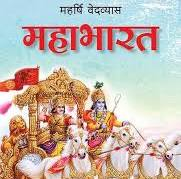
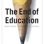
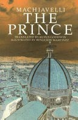

| Sr No. |
Book Name |
Book Image |
Details |
Source |
Price in Indian Rupees |
| 1. |
Rich Dad Poor Dad |
 |
It tells the story of Kiyosaki and his two dads, and how they influenced his ideas about money |
Visit this book |
245 |
| 2. |
Mahabharat |
 |
The main story revolves around two branches of a family - the Pandavas and Kauravas - who, in the
Kurukshetra War, battle for the throne of Hastinapura |
Visit this book |
129 |
| 3. |
The 7 Habits of Highly Effective People |
 |
Each habit is based on universal principles and paradigms of effectiveness, with practices that move
learners from dependence and independence to interdependence. |
Visit this book |
365 |
| 4. |
The End of Education |
 |
Very illuminating book about the nature of education and revelatory about the implicit narratives that
it serves |
|
1217 |
| 5. |
The Prince |
 |
A ruler must sometimes act immorally to maintain power, for it is often better to be feared than loved. |
|
120 |